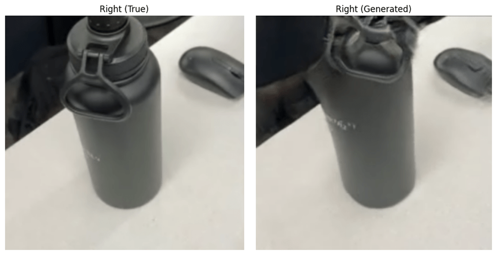

This project studies stereopsis-inspired image transformation: given a scene from one viewpoint, generate the corresponding image from a slightly offset viewpoint. The work compares a Pix2Pix-only image translation model, a hybrid method that combines monocular depth estimation with analytical pixel shifting before Pix2Pix, and a final variant that adds interpolation to repair blank regions introduced by the shift.
The interpolation-enhanced hybrid model performs best in the article's evaluation, reaching SSIM 0.81 and PSNR 20.6 dB on the held-out test set. The result supports a practical design principle: analytical depth cues can make the learned perspective transform easier, while the generator handles visual reconstruction and local realism.
Results
| Model | Training input | SSIM | PSNR | MSE | MAE |
|---|---|---|---|---|---|
| Pix2Pix | Original | 0.72 | 19.9 | 689.9 | 11.9 |
| Composite | Combined | 0.76 | 20.3 | 630.9 | 11.0 |
| Model 3 Best | Enhanced | 0.81 | 20.6 | 628.0 | 10.3 |
Figures


{kind=link}